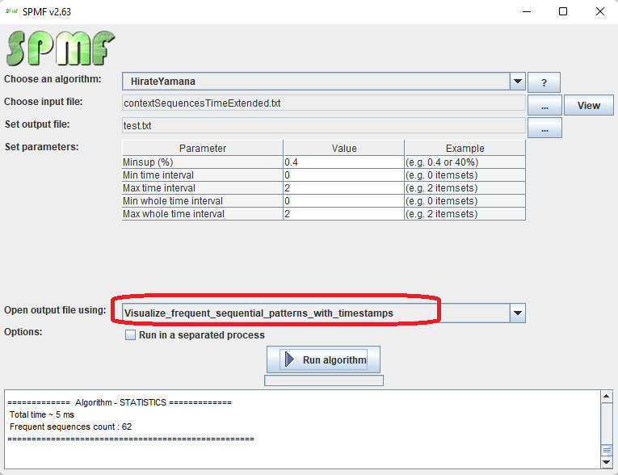
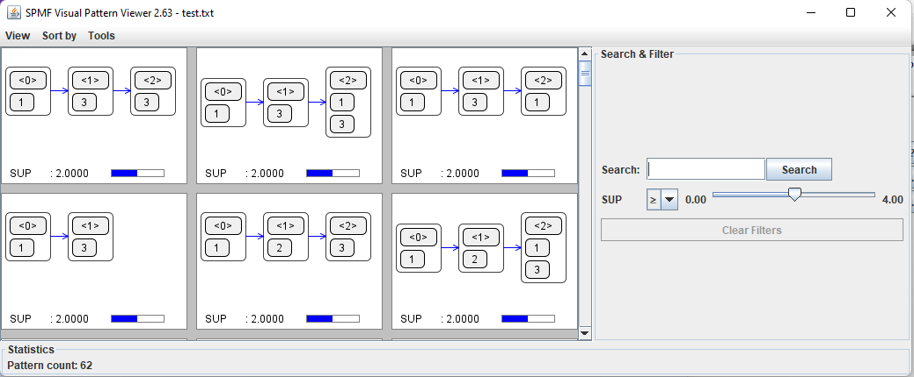

View frequent sequential patterns (with timestamps) with the Visual Pattern Viewer (SPMF documentation)
Frequent sequential patterns (with timestamps) are a type of patterns that can be produced by different algorithms offered in SPMF.
This page explains how to visualize the frequent sequential patterns (with timestamps) found by an algorithm using the Visual Pattern Viewer.
How to run this example?
If you want to run this example using the graphical user interface of SPMF, follow these steps.
1) First, select an frequent sequential pattern (with timestamps) mining algorithm offered in SPMF. Several algorithms are offered and are described in the documentation of SPMF.
2) Then, in the user interface of SPMF, after selecting an algorithm and setting its input file path, output file path, and parameters, click on the combo-box besides "Open output file using:", and select "Visualize_frequent_sequential_patterns_with_timestamps" so that the discovered patterns will be opened with the visual pattern viewer.

3) Then click on "Run algorithm" to run the algorithm.
After the algorithm terminates, the discovered patterns will be displayed using the Visual Pattern Viewer:

The Visual Pattern Viewer interface is quite intuitive. It displays each pattern with its value for each evaluation measure using a colored bar.
The Visual Pattern Viewer offers several features such as:
- Viewing patterns using different layouts (grid, horizontal and vertical layout).
- Sorting patterns by size and measure values.
- Searching and filtering using measure values
- Displaying statistics about the number of patterns found.
Other ways of running the Visual Pattern Viewer
It is also possible to run the Visual Pattern Viewer as an algorithm from the GUI of SPMF..
In this case, in the user interface of SPMF, select "Visualize_frequent_sequential_patterns_with_timestamps" as algorithm. Then, select a file containing frequent sequential patterns (with timestamps) as input file. Then, click "run algorithm".
This will display the patterns from the file using the Visual Pattern Viewer.
Besides, it is also possible to call the Visual Pattern Viewer from the command line interface of SPMF. To open a file called patternsSequentialPatternsWithTime.txt, this syntax can be used:
java -jar spmf.jar run Visualize_frequent_sequential_patterns_with_timestamps patternsSequentialPatternsWithTime.txt in a folder containing spmf.jar and the input file.
What is the input file format?
The algorithm takes as input a file containing frequent sequential patterns (with timestamps) .
The file format is defined as follows. It is a text file, where each line represents an frequent sequential pattern (with timestamps) .
The first two lines are metadata indicating the type of patterns in this file and the source of the data. Then the following lines provide the list of patterns. Each line starts by listing the itemsets of the sequential pattern, where each itemset has a relative timestamp represented by a positive integer between the "<" and "> symbol. Then the timestamp is followed by each item in the itemset, each represented by a positive integer. The items of the itemset appear separated by single spaces and the symbol "-1" indicates the end of an itemset. Finally, after all the itemsets of a sequential pattern, the keyword "#SUP:" is followed by an integer indicating the support of the pattern as a number of sequences. For example, here is a small pattern file:
@FILETYPE="Frequent sequential patterns with timestamps"
@SOURCE="SPMF SOFTWARE https://philippe-fournier-viger.com/spmf/"
<0> 1 -1 <1> 3 -1 <2> 3 -1 #SUP: 2
<0> 1 -1 <1> 3 -1 <2> 1 3 -1 #SUP: 2
<0> 1 -1 <1> 3 -1 <2> 1 -1 #SUP: 2
<0> 1 -1 <1> 3 -1 #SUP: 2
<0> 1 -1 <1> 2 -1 <2> 3 -1 #SUP: 2
<0> 1 -1 <1> 2 -1 <2> 1 3 -1 #SUP: 2
Consider the first line. It represents a sequential pattern having the itemset {1, 2} with a relative timestamp of 0, followed by the itemset {1, 3} one time unit later. This pattern has a support of 2 sequences. The second line follow the same format.